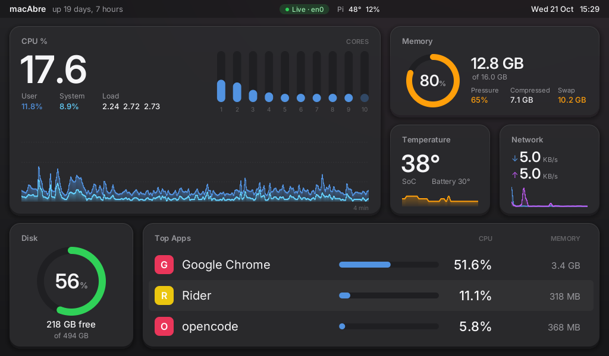
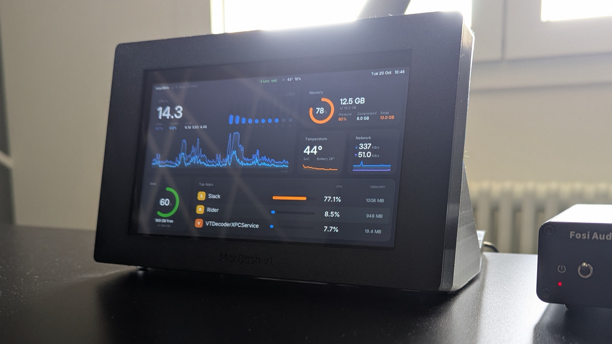
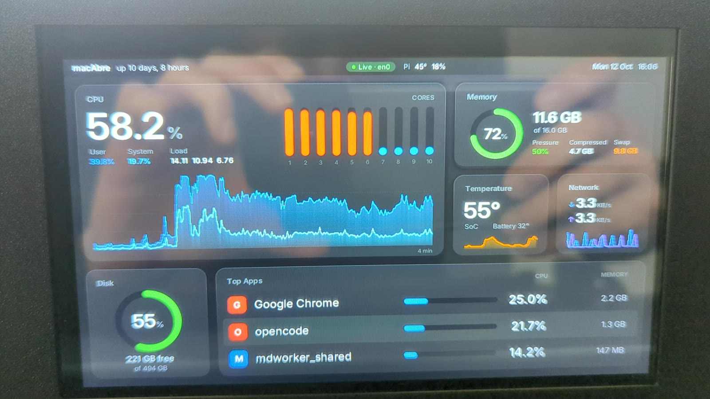
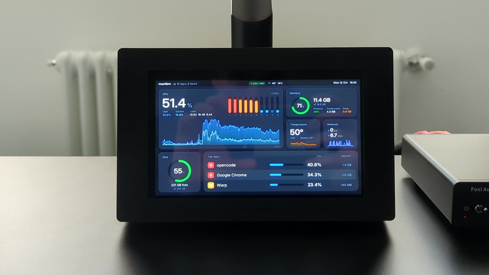
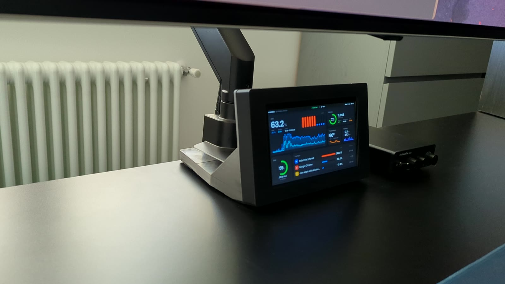

CPU
Total, per core, user and system, load, and a true 4-minute history.
Open source · Rust · Raspberry Pi
A tiny agent measures your Mac. A Pi with a small display draws it, pixel by pixel, straight into the framebuffer. No desktop, no browser, no setup of IP addresses.


A 7-inch panel in a printed case, always on, always current. Glance over, know your Mac.
The real panel, filmed on the desk. Turn the sound on.
Total, per core, user and system, load, and a true 4-minute history.
Used, pressure, compressed and swap.
SoC and battery, plus the Pi's own temperature and load.
Live up and down throughput with a scrolling chart.
The Mac's data volume: used and free.
The three busiest apps, with helper processes counted together.
The panel follows your Mac on its own.
The dashboard notices within seconds and turns the screen off, so the panel isn't glowing in a dark room.
The first reading that arrives turns the screen back on. Nothing to press, nothing to restart.
Only the screen sleeps with your Mac. The Pi itself keeps running, ready to wake the panel. This works when the Pi is installed with --hdmi (or --backlight for panels with a backlight device). It also follows the Mac's display sleeping, even when the Mac itself stays awake.
The Pi announces itself on the LAN every 3 seconds. The Mac finds it on its own, even after a reboot.
Five times a second the agent sends one small UDP packet. A lost packet is replaced by the next.
The Pi paints the image itself and writes it to /dev/fb0, redrawing only what changed.
Prefer a terminal? There is also a text dashboard for SSH and Mac terminals. See the README.
Click a photo to enlarge it.



Everything used in the original build. The links are Amazon listings that may disappear, so each part is described well enough to search for an equivalent.
About the screen. This display is not ideal. Its HDMI and power inputs are on the side, so it needed two 90° adapters, and the case had to grow around them. With the connectors on the back, no adapters would be needed and, more importantly, the bezels around the screen could be much smaller. If you pick a panel for this build, look for one with the ports on the back.
Print it, remix it, or clone the Onshape documents and change anything.
Drag to rotate. Needs WebGL.
The bezel that holds the panel. Open it and click Copy workspace to edit your own version.
OnshapeThe back shell with the Pi mount and the stand.
OnshapeReady to slice. 580 KB.
STLReady to slice. 354 KB.
STLRust workspace: agent, display and wire format. MIT licence.
GitHubWhy UDP and beacons, and how the CPU cost fell from 22% to 0.012%.
DocsPrinting settings: add layer height, material and supports here once you have them.
Both machines on the same LAN.
cargo run --release -p macdash-agent # Mac
cargo run --release -p macdash-tui # anywhere on the LAN./deploy/install-mac.shcargo install cross --git https://github.com/cross-rs/cross
./deploy/build-pi.sh # --zero2 for a Zero 2 W
./deploy/install-pi.sh pi@192.168.0.148 --hdmiThe dashboard starts at boot with no keyboard, and finds the Mac by itself. All flags are in the README.